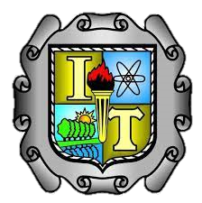

|
Instituto Tecnológico De Saltillo |
 |
|---|---|---|
Tecnológico Nacional de México |
En el Instituto Tecnológico de Saltillo se cuenta con un comedor tipo cafetería que da el servicio de venta de alimentos como
sándwich, hamburguesas, burritos, refrescos,
entre muchos más productos como galletas, panecillos, frituras, entre otras mas. Brinda un servicio desde las 8 a.m hasta las 8 p.m.
En él área de cocina trabajan personas con mucha experiencia en este ámbito y en él área de despacho trabajan estudiantes de la misma institución,
en el área de comedor se cuenta con un espacio para 30 mesas aproximadamente, está ubicada
en el centro del campus para darle fácil acceso a los estudiantes que transcurren por el área
Es un lugar muy cómodo y tranquilo para los estudiantes para comer su almuerzo en sus tiempos libres.